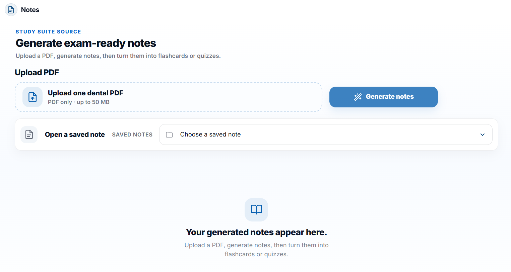
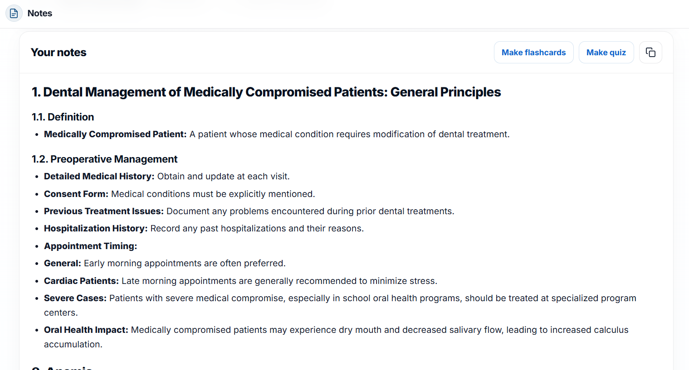
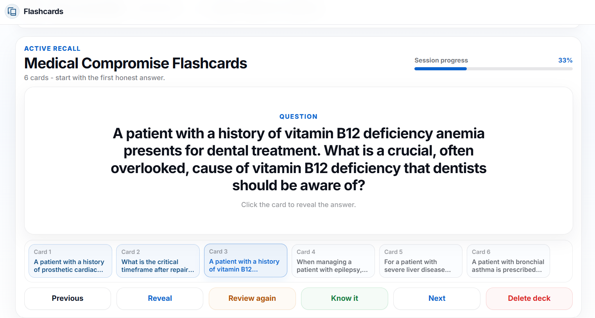
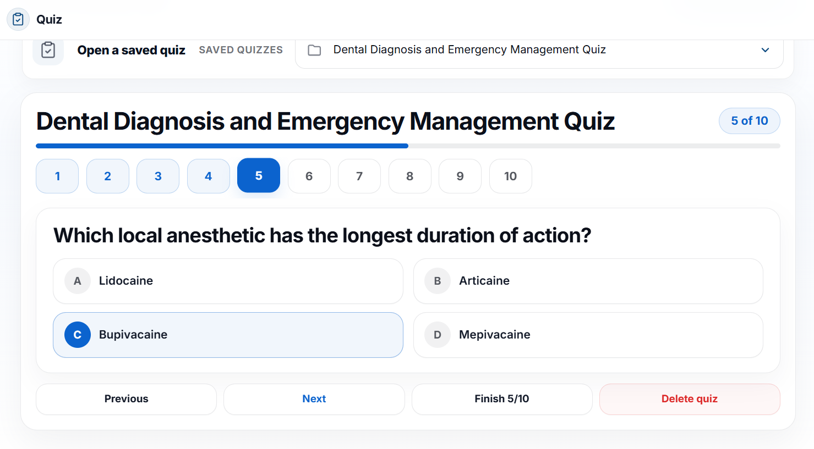
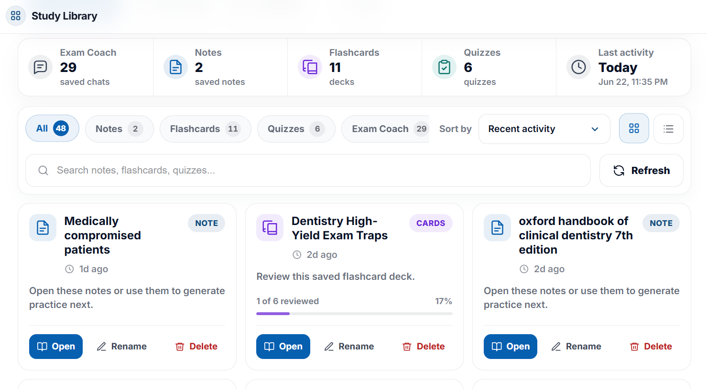

Step 1
Start with the exact thing you need to understand.
Ask a dental question, paste a topic, or upload your own lecture PDF so the answer starts from your real study material.

Create professional notes from your PDFs, ask Exam Coach when a topic needs clarity, then practice and save the work in your Library.
Start with a PDF, topic, or exam question, then move into notes, Exam Coach explanations, flashcards, quizzes, and your saved Library.
Step 1
Ask a dental question, paste a topic, or upload your own lecture PDF so the answer starts from your real study material.

Step 2
DentAIstudy helps compress long explanations into clearer exam focused notes without losing the clinical meaning.

Step 3
Create focused decks from the material you are studying so you can review faster and keep repeating what matters.

Step 4
Generate quiz practice from your own topic or notes and check whether you can actually recall the answer.

Step 5
Saved chats, flashcards, and quizzes stay inside your study library so you can return to them without starting again.

Start with the exam route you are preparing for, then move into guides, articles, and study support

OSCE, operative, viva, and practical exam content for candidates who want structured prep

Entry point for ORE Part 1, Part 2, booking, timelines, and exam specific article paths

Canadian equivalency exam guides, route explanations, and supporting articles in one place

Assessment pathway, written exam, practical exam, costs, deadlines, and Australia route content

Saudi exam prep content, route guidance, and linked long tail study articles for faster navigation

DHA, MOH, and DOH pathways with route comparisons, licensing content, and exam guidance
Start with material or a weak topic, then turn it into notes, OSCE flows, flashcards, or quiz practice without switching tools.
Ameloblastoma is a benign but locally aggressive odontogenic tumour. Revision should focus on origin, radiographic pattern, management, and recurrence risk.
Build a station ready structure so you know what to ask, what to examine, and how to present management clearly.
Which feature best explains why ameloblastoma often needs surgical management?
Use subject hubs when you want broader study by discipline, not only by exam route
Restorative principles, cavity preparation, matrix systems, finishing, and exam focused basics
Diagnosis, pulp therapy, irrigation, obturation logic, and the core concepts students revisit often

Extractions, post op principles, complications, emergency thinking, and high yield clinical revision
Behaviour guidance, pulpotomy and pulpectomy logic, prevention, and child focused clinical topics
Problem lists, space analysis, diagnosis thinking, and revision support for core ortho topics
Assessment, staging, grading, maintenance, and the concepts that keep appearing in exams and clinics
Feedback from dental students, candidates, and residents using DentAIstudy for exam prep, clinical revision, and structured study.
“I use Exam Coach when a topic feels too dense before clinics. It breaks things down clearly and helps me organize the clinical steps into something I can actually review.”
“For residency seminars I usually start with my PDF in Notes, then use Exam Coach when I need to go deeper into the mechanics. Having both in one place saves me a lot of switching around.”
“The ADC Exam Hub gave me a much clearer place to start. I can follow the exam guidance, then use Exam Coach when I need a topic explained instead of searching across different sites.”
“I like turning my Notes into quizzes because rereading can make you think you know more than you do. The questions show me very quickly which parts I actually remember.”
“For INBDE prep I use the Exam Hub to stay oriented, then build flashcards from the topics I keep forgetting. It makes a huge syllabus feel much easier to work through.”
“Oral Pathology used to feel like another language. I use Exam Coach to work through the presentation, radiographic features, and histology until the differences actually make sense.”
“I use DentAIstudy to organize dense seminar material before I start presenting it. Notes gives me the structure, and Exam Coach is useful when I want to question or clarify a specific point.”
Clear answers about Notes, Exam Coach, flashcards, quizzes, and how DentAIstudy fits into real dental exam prep.